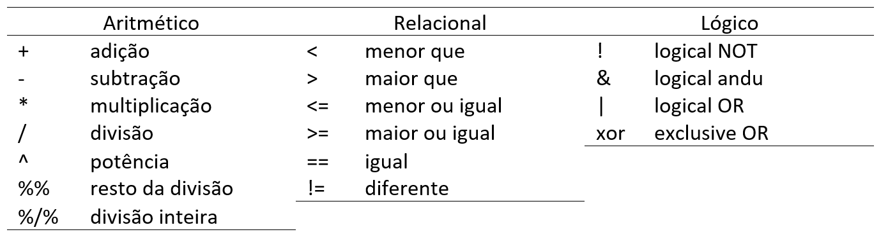

Last updated: 2023-05-08
Checks: 6 1
Knit directory:
Manipulacao-dados-e-Analise-Grafica-R/
This reproducible R Markdown analysis was created with workflowr (version 1.7.0). The Checks tab describes the reproducibility checks that were applied when the results were created. The Past versions tab lists the development history.
The R Markdown file has unstaged changes. To know which version of
the R Markdown file created these results, you’ll want to first commit
it to the Git repo. If you’re still working on the analysis, you can
ignore this warning. When you’re finished, you can run
wflow_publish to commit the R Markdown file and build the
HTML.
Great job! The global environment was empty. Objects defined in the global environment can affect the analysis in your R Markdown file in unknown ways. For reproduciblity it’s best to always run the code in an empty environment.
The command set.seed(20220826) was run prior to running
the code in the R Markdown file. Setting a seed ensures that any results
that rely on randomness, e.g. subsampling or permutations, are
reproducible.
Great job! Recording the operating system, R version, and package versions is critical for reproducibility.
Nice! There were no cached chunks for this analysis, so you can be confident that you successfully produced the results during this run.
Great job! Using relative paths to the files within your workflowr project makes it easier to run your code on other machines.
Great! You are using Git for version control. Tracking code development and connecting the code version to the results is critical for reproducibility.
The results in this page were generated with repository version 5464454. See the Past versions tab to see a history of the changes made to the R Markdown and HTML files.
Note that you need to be careful to ensure that all relevant files for
the analysis have been committed to Git prior to generating the results
(you can use wflow_publish or
wflow_git_commit). workflowr only checks the R Markdown
file, but you know if there are other scripts or data files that it
depends on. Below is the status of the Git repository when the results
were generated:
Ignored files:
Ignored: .Rproj.user/
Unstaged changes:
Modified: analysis/Tutorial.Rmd
Modified: analysis/about.Rmd
Modified: analysis/analise-grafica.Rmd
Modified: analysis/index.Rmd
Modified: analysis/introducao-r.Rmd
Modified: analysis/license.Rmd
Modified: analysis/manipulacaodedados.Rmd
Note that any generated files, e.g. HTML, png, CSS, etc., are not included in this status report because it is ok for generated content to have uncommitted changes.
These are the previous versions of the repository in which changes were
made to the R Markdown (analysis/introducao-r.Rmd) and HTML
(docs/introducao-r.html) files. If you’ve configured a
remote Git repository (see ?wflow_git_remote), click on the
hyperlinks in the table below to view the files as they were in that
past version.
| File | Version | Author | Date | Message |
|---|---|---|---|---|
| Rmd | 620025d | WevertonGomesCosta | 2022-11-16 | Update |
| html | 620025d | WevertonGomesCosta | 2022-11-16 | Update |
| Rmd | bcef040 | WevertonGomesCosta | 2022-10-20 | Update |
| html | bcef040 | WevertonGomesCosta | 2022-10-20 | Update |
| Rmd | c9a3453 | WevertonGomesCosta | 2022-10-20 | Update |
| html | c9a3453 | WevertonGomesCosta | 2022-10-20 | Update |
| Rmd | abb97e2 | WevertonGomesCosta | 2022-10-20 | Update |
| html | abb97e2 | WevertonGomesCosta | 2022-10-20 | Update |
| Rmd | 206bfa9 | WevertonGomesCosta | 2022-09-12 | Update |
| html | 206bfa9 | WevertonGomesCosta | 2022-09-12 | Update |
Introdução ao R
O R é uma linguagem de programação livre e de código aberto que é amplamente utilizada para análise de dados, estatística e visualização de dados. Neste curso, vamos explorar alguns conceitos básicos do R que vão ajudar a iniciar seus estudos em análise de dados.
Neste material de introdução ao R, você aprenderá mais sobre o software e como utilizá-lo. Já vimos na seção Tutorial como instalar e carregar pacotes, agora vamos dar mais enfoque na programação em si.
Diretório de trabalho
Para dar início a qualquer projeto, primeiro precisamos indicar para
o R onde vamos trabalhar, ou seja, indicar a nossa pasta de trabalho.
Para isso usamos a função setwd():
setwd("C:/curso_conectagem")OBS: No Windows, ao copiar um diretório, é importante lembrar que
a barra deve ser invertida, como no exemplo acima, ou utilizar duas
barras: C:\\curso_conectagem.
Para confirmar se o diretório foi definido corretamente, usamos a
função getwd().
getwd()O diretório de trabalho é onde o R buscará por arquivos quando não houver um caminho absoluto para eles. É importante definir o diretório de trabalho no início do seu código para evitar problemas com caminhos relativos.
Importando dados
Os dados podem ser importados para o R em diversos formatos (tipos de arquivos), como planilhas eletrônicas (.xls, .xlsx, .ods), arquivos de texto (.txt), valores separados por vírgulas (.csv), Dbase (.dbf) e outros formatos utilizados por pacotes estatísticos (.Rdata - R, .sav - SPSS, etc).
É possível importar os dados pela própria interface do RStudio. Para
isso, vamos em Import Dataset e selecionamos o formato dos
dados.


Durante o curso, utilizaremos várias funções para importação de
dados, para que você possa se familiarizar melhor com elas. Começaremos
utilizando a função read_csv() do pacote
readr, que já está incluso no framework
tidyverse. Essa função importa tanto dados em formato .csv
quanto .txt.
library(tidyverse)-- Attaching core tidyverse packages ------------------------ tidyverse 2.0.0 --
v dplyr 1.1.2 v readr 2.1.4
v forcats 1.0.0 v stringr 1.5.0
v ggplot2 3.4.2 v tibble 3.2.1
v lubridate 1.9.2 v tidyr 1.3.0
v purrr 1.0.1
-- Conflicts ------------------------------------------ tidyverse_conflicts() --
x dplyr::filter() masks stats::filter()
x dplyr::lag() masks stats::lag()
i Use the conflicted package (<http://conflicted.r-lib.org/>) to force all conflicts to become errorsdados <- read_csv("data/dados.csv") # Função para importar os dadosRows: 96 Columns: 9
-- Column specification --------------------------------------------------------
Delimiter: ","
chr (2): trat, gen
dbl (7): id, blocos, sev1, sev2, sev3, area, areat
i Use `spec()` to retrieve the full column specification for this data.
i Specify the column types or set `show_col_types = FALSE` to quiet this message.dados# A tibble: 96 x 9
trat id gen blocos sev1 sev2 sev3 area areat
<chr> <dbl> <chr> <dbl> <dbl> <dbl> <dbl> <dbl> <dbl>
1 Testemunha 6165 1 Predileta 1 0.97 1.9 12 58.7 14.7
2 Testemunha 6165 2 Predileta 2 1.9 1.9 8 48.0 13.0
3 Testemunha 6165 3 Predileta 3 3.3 3.3 12 76.6 17.2
4 Testemunha 6165 4 Predileta 4 1.9 3.3 12 71.8 16.5
5 Testemunha 6165 5 Inca 1 1.9 12 31 199. 29.9
6 Testemunha 6165 6 Inca 2 1.9 12 31 199. 29.9
7 Testemunha 6165 7 Inca 3 1.9 8 22 140. 24.4
8 Testemunha 6165 8 Inca 4 0.97 12 31 196. 29.6
9 UFV 02 9 Predileta 1 0.97 8 8 87.4 18.6
10 UFV 02 10 Predileta 2 1.9 12 12 133. 23.7
# i 86 more rowsExportando dados:
Da mesma forma que a importação dos dados, os dados também podem ser
exportados para do R em diversos formatos (tipos de arquivos). Aqui,
como exemplo, iremos usar a função write_csv() para
exportar os dados no formato .csv.
write_csv(dados, file = "dados2.csv")Objetos
Objetos são uma parte essencial da programação em R. São usados para armazenar valores, que podem ser dados numéricos, caracteres, booleanos, fatores e outros.
Criando objetos
Os objetos são variáveis que armazenam valores durante a sessão no R.
Para criar um objeto, usamos o sinal de atribuição <-,
= ou ->, como por exemplo
x <- 50..
x <- 50Em seu ambiente de trabalho (parte superior direita da janela do RStudio) o objetivo irá ser armazenado e você pode acessá-lo quando desejar.

Você também pode atribuir valores de objetos de outras formas,
utilizando = ou ->:
15 -> y
z = 25OBS: Quando utilizar -> o valor da variavel deve
ser especificado antes do sinal e a variável do objeto deve ser
especificado depois do sinal.
Também é possível especificar que um objeto seja atribuído por um
resultado de uma função. Nesse caso vamos adotar a raiz quadrada de z
sqrt(z) como a variavel m.
m <- sqrt(z)Imprimir valores dos objetos
Para exibir o valor armazenado em um objeto, você pode usar a função print() ou simplesmente digitar o nome do objeto:
print(x)[1] 50y[1] 15É importante lembrar que, ao atribuir um novo valor a um objeto já
existente, seu conteúdo anterior será perdido. Por exemplo, se
atribuirmos um valor a x <- 100, em seu ambiente x
passará a ter o valor de 100 e não mais o valor de 50, como atribuído
anteriormente.
Listar objetos armazenados no ambiente
Para listar todos os objetos armazenados no ambiente, utilizamos a
função ls().
ls()[1] "dados" "m" "x" "y" "z" Removendo objetos
Se desejar remover algum objeto armazenado, pode utilizar a função
rm() incluindo dentro do parênteses o objeto a ser removido
do seu ambiente.
rm(x)Para remover todos os objetos armazenados no ambiente, você pode usar
rm(list = ls()).
rm(list = ls()) Atributos dos Objetos
No R, quase todo objeto possui atributos como tipo, tamanho, etc.
Tipo e tamanho são os atributos intrínsecos de todo objeto.
O tipo de um objeto é revelado pelo comando
mode()ouclass()outypeof(). Para saber mais recomendo o Manual de definição de linguagem R.
Principais tipos de objetos no R:
caracter: Texto ou caracter.
nome <- "nome" ## Observe que caracteres são tratados com o uso de aspas.
nome[1] "nome"numericoudouble: Números reais.
numero <- 5.10
numero[1] 5.1integer: Números inteiros.
inteiro <- c(5, 10, 15, 16)
inteiro[1] 5 10 15 16logical: também chamados de booleanos, sãoTRUEouFALSE. T ou F também são aceitos.
x <- c(TRUE, FALSE, FALSE) # vetor de elementos lógicos
x[1] TRUE FALSE FALSEfator: Vetor que representa dados categóricos.
cores <- factor(c("rosa", "azul", "preto"))
cores[1] rosa azul preto
Levels: azul preto rosaIdentificando os atributos dos objetos - mode() ou
class() ou typeof().
Exemplo com caracter.
mode(nome) ## Retorna o modo do objeto[1] "character"class(nome) ## Retorna a classe do objeto[1] "character"typeof(nome) ## Retorna o tipo do objeto[1] "character"Exemplo com numeric.
valor <- 5
mode(valor)[1] "numeric"class(valor)[1] "numeric"typeof(valor)[1] "double"Exemplo com logical.
v <- TRUE
mode(v)
class(v)
typeof(v)No R, um objeto pode conter um ou mais elementos e a função
length() é utilizada para retornar o tamanho do objeto.
Por exemplo, podemos atribuir um valor a x e depois
utilizar a função length() para retornar o tamanho do
objeto:
x <- 10
length(x) ## Retorna o tamanho do objeto[1] 1Também podemos criar um objeto y sendo uma sequência
seq() de 1 a 5 e solicitar o tamanho length()
desse objeto:
y <- seq(1, 5, 1) # A função seq() retorna uma sequência de números de 1 a 5, com intervalo 1.
length(y) # Retorna o tamanho do objeto[1] 5Estrutura dos objetos
No R, os dados contidos em um objeto podem estar organizados em diferentes estruturas.
vector(): Uma sequência de valores numéricos ou de caracteres (letras, palavras) organizados em apenas uma dimensão.
z <- c(60, 70, 80, 90)
z[1] 60 70 80 90mode(z)[1] "numeric"class(z)[1] "numeric"typeof(z)[1] "double"Observação: Todos os elementos de um vetor têm que ser do mesmo tipo (modo). Caso tentemos criar um vetor com elementos de tipo diferente o R vai forçá-los a ser do mesmo tipo.
z <- c(60, 70, 80, 90, "nome")
z[1] "60" "70" "80" "90" "nome"mode(z)[1] "character"class(z)[1] "character"typeof(z)[1] "character"matrix(): Coleção de vetores em linhas e colunas, todos os vetores dever ser do mesmo tipo (numérico ou de caracteres).
w <- matrix(c(60, 70, 80, 90, 100, 110, 120, 130, 150), 2, 4, byrow = T)
w [,1] [,2] [,3] [,4]
[1,] 60 70 80 90
[2,] 100 110 120 130class(w)[1] "matrix" "array" class(w)[1] "matrix" "array" typeof(w)[1] "double"array(): Pode conter uma (vetor), duas (matriz) ou mais dimensões.
z <- array(c(60, 70, 80, 90, 100, 110, 120, 130, 150), dim = c(3, 3, 3))
z, , 1
[,1] [,2] [,3]
[1,] 60 90 120
[2,] 70 100 130
[3,] 80 110 150
, , 2
[,1] [,2] [,3]
[1,] 60 90 120
[2,] 70 100 130
[3,] 80 110 150
, , 3
[,1] [,2] [,3]
[1,] 60 90 120
[2,] 70 100 130
[3,] 80 110 150mode(z)[1] "numeric"class(z)[1] "array"typeof(z)[1] "double"list(): combina diferentes tipos num mesmo objeto, mas em formato de lista. Listas são coleções de elementos que não precisam ser da mesma classe. As listas podem ser criadas explicitamente usando a funçãolist():
q <- list(w)
mode(q)[1] "list"class(q)[1] "list"typeof(q)[1] "list"Observações:
Uma lista pode conter vetores e outras listas;
Cada componente da lista pode ser acessado por meio de um índice entre dois colchetes [].
data.frame(): é o mesmo que uma matriz, mas aceita vetores de diferentes estruturas (numérico, caracteres, lógicos, complexos, inteiros). Geralmente, nós guardamos nossos dados em objetos do tipodata.frame, pois sempre temos variáveis numéricas e categóricas (por exemplo, largura do rio e nome do rio, respectivamente).
w <- data.frame(c(1, 2, 3), c(1, 2, 3))
mode(w)[1] "list"class(w)[1] "data.frame"typeof(w)[1] "list"Veja que o modo do data.frame e o tipo aparecem em formato de list e a classe como data.frame. Isso porque a coleção formada pelas 2 variáveis forma um objeto do tipo list (lista). Então cada uma das variáveis é um vetor e os dois vetores formam uma lista. Essa é uma lista especial onde cada um dos vetores possuem o mesmo número de elementos. Este conjunto de dados é da classe data.frame. Assim um data frame contém uma lista na qual todos os seus componentes possuem o mesmo número de elementos.
Exercícios
Crie um vetor numérico de comprimento 5, obtenha a raiz quadrada e multiplique por um número.
Considere o vetor
x <- c("milho", "soja"). Transforme o vetorxem um vetor de fatores, mas inclua o nível"algodao".Crie uma matriz (M) quadrada de ordem 5 preenchida com a sequência de 1 à 25.
Defina um fator e um vetor numérico e construa uma lista com os dois objetos atribuindo a cada componente um nome de sua escolha.
Crie um data frame com a matriz de dados peso=(60,70,80), altura=(160,150,170) e sexo=(F,M,F). Calcule a média de cada variável.
Função Envolvendo Condições
Uma das principais vantagens do R é sua capacidade de lidar com dados complexos e aplicar funções condicionais a eles. Isso é especialmente útil para a análise gráfica, pois permite que os usuários criem visualizações personalizadas que respondam a diferentes cenários de dados.
if() e else()
Uma das funções condicionais mais básicas é if() e
else(). Essa função verifica se uma determinada condição é
verdadeira ou falsa e executa o código correspondente a cada
resultado.
x <- 5
if (x > 3) {
print("x é maior que 3")
} else {
print("x é menor ou igual a 3")
}[1] "x é maior que 3"No exemplo acima, a função if verifica se a variável
x é maior que 3. Como x tem o valor de 5, a
condição é verdadeira e a mensagem “x é maior que 3” é impressa. Se a
condição fosse falsa, a mensagem “x é menor ou igual a 3” seria
impressa.
ifelse
A função ifelse é uma variação do if e
else, mas é capaz de aplicar uma condição a um vetor
inteiro de valores.
x <- c(1, 2, 3, 4, 5)
ifelse(x > 3, "maior que 3", "menor ou igual a 3")[1] "menor ou igual a 3" "menor ou igual a 3" "menor ou igual a 3"
[4] "maior que 3" "maior que 3" No exemplo acima, a função ifelse verifica se cada valor
em x é maior que 3. Os valores verdadeiros recebem o valor
“maior que 3” e os valores falsos recebem o valor “menor ou igual a
3”.
switch
A função switch é usada para selecionar um dos vários caminhos possíveis, com base em um valor de entrada específico.
x <- "azul"
switch(x,
"vermelho" = print("Você escolheu vermelho"),
"verde" = print("Você escolheu verde"),
"azul" = print("Você escolheu azul"),
print("Escolha inválida"))[1] "Você escolheu azul"No exemplo acima, a função switch seleciona uma mensagem
para imprimir, com base na escolha de cor feita pelo usuário. Se a
escolha não for “vermelho”, “verde” ou “azul”, a mensagem “Escolha
inválida” é impressa.
Operadores Lógicos
Os operadores lógicos no R são usados para testar as condições lógicas em expressões. O R possui seis operadores lógicos:

Aqui estão alguns exemplos de uso desses operadores em funções de condição no R:
Exemplo do operador “E” lógico
x <- 5
if (x > 1 & x < 10) {
print("x está entre 1 e 10")
}[1] "x está entre 1 e 10"Exemplo do operador “OU” lógico
y <- 15
if (y < 5 | y > 20) {
print("y não está entre 5 e 20")
}Exemplo do operador “NÃO” lógico
z <- 8
if (!(z == 5)) {
print("z não é igual a 5")
}[1] "z não é igual a 5"Exemplo do operador “E” lógico curto-circuito
a <- 3
b <- NULL
if (!is.null(b) && a < 5) {
print("a é menor que 5 e b não é nulo")
}Exemplo do operador “OU” lógico curto-circuito
c <- 10
d <- NULL
if (is.null(d) || c > 5) {
print("c é maior que 5 ou d é nulo")
}[1] "c é maior que 5 ou d é nulo"Exemplo do operador “OU-exclusivo” lógico
e <- TRUE
f <- FALSE
if (xor(e, f)) {
print("e é verdadeiro e f é falso ou vice-versa")
} [1] "e é verdadeiro e f é falso ou vice-versa"Outro exemplo, podemos criar um programa que identifica se existe ao menos um objeto positivo ou negativo.
a <- 2
b <- -5
if (a < 0 | b < 0) {
print("Existe pelo menos uma variável negativa")
} else {
print("Todas as variáveis do conjunto de dados são positivas")
}[1] "Existe pelo menos uma variável negativa"- ATIVIDADES
Crie um vetor contendo 10 valores e em seguida crie um programa que identifique qual o maior valor desta lista.
Crie um programa que identifique se um valor é par ou ímpar.
Criando funções no R
Uma das principais vantagens do R é a facilidade e a possibilidade de criar novas funções. Além disso, existem diversas funções nativas do R e disponíveis em pacotes que podem ser utilizadas, economizando tempo e evitando a reinvenção da roda. Nesta seção, veremos como criar algumas funções simples para entender como elas são desenvolvidas.
As funções no R são objetos da classe function e podem
ter qualquer nome, desde que iniciem com uma letra (maiúscula ou
minúscula). No entanto, é importante evitar criar objetos com nomes de
funções já existentes no R, como sum, mean,
sd, t, c, entre outros.
Como exemplo, vamos criar uma função de soma simples:
soma <- function(a, b) {
soma <- a + b
return(soma)
}
class(soma)[1] "function"Acima, criamos a função soma que recebe dois argumentos,
a e b, e retorna a soma desses dois valores.
Para testar a função, podemos usá-la da seguinte forma:
x <- 6
y <- 10
soma(x, y)[1] 16Para somar vetores no R, podemos criar uma função que recebe dois
vetores e retorna um novo vetor com a soma dos elementos
correspondentes. Como exemplo, podemos melhorar o código da função
soma apresentado anteriormente:
soma_vetor <- function(a, b) {
if (length(a) != length(b)) {
stop("Os vetores não possuem o mesmo comprimento")
}
soma <- a + b
return(soma)
}Acima, adicionamos uma verificação de comprimento dos vetores para evitar erros. A função verifica se os dois vetores têm o mesmo comprimento e, caso contrário, interrompe o processo e exibe uma mensagem de erro.
Agora, a função soma_vetor verifica se os dois vetores têm o mesmo comprimento e, caso contrário, interrompe o processo e exibe uma mensagem de erro.
Podemos testar a nova função com os vetores x e
y criados anteriormente:
x <- c(2, 4, 6)
y <- c(6, 8, 10)
soma_vetor(x, y)[1] 8 12 16Valores ausentes
Na análise de dados, é comum encontrarmos valores ausentes (missing values), que podem ocorrer por diversos motivos, como falhas na coleta de dados ou erros de medição.
No R, os valores ausentes são denotados por NA ou
NaN (Not a Number). Note que um valor NaN
também é considerado NA, mas o contrário não é verdadeiro.
Para verificar se um objeto é NA ou NaN,
usamos as funções is.na() e is.nan(),
respectivamente.
As funções is.na() e is.nan() são usadas
para testar se um objeto é NA ou NaN,
respectivamente. Por exemplo, podemos criar um vetor com um valor
ausente usando o comando c():
x <- c(1, 2, NA, 10, 3) # vetor com um elemento NA
x[1] 1 2 NA 10 3Em seguida, podemos usar a função is.na() para
identificar quais elementos do vetor x são valores
ausentes:
is.na(x) # retorna um vetor lógico indicando quais elementos são NA[1] FALSE FALSE TRUE FALSE FALSEDessa forma, podemos identificar a presença de valores ausentes em um
vetor e tratá-los adequadamente na análise de dados. Por exemplo,
podemos remover as observações com valores ausentes utilizando a função
na.omit():
y <- na.omit(x) # remove os elementos NA do vetor x e atribui ao vetor y
y[1] 1 2 10 3
attr(,"na.action")
[1] 3
attr(,"class")
[1] "omit"Também é possível preencher os valores ausentes com um valor padrão
utilizando a função replace():
z <- replace(x, is.na(x), 0) # substitui os valores NA do vetor x por 0 e atribui ao vetor z
z[1] 1 2 0 10 3Com essas técnicas, podemos tratar valores ausentes de forma adequada e evitar resultados incorretos na análise de dados.
Parabéns! Agora que você já sabe o básico da linguagem R, está pronto para aprender a manipular e transformar seus dados utilizando o pacote tidyverse. O tidyverse é um conjunto de pacotes desenvolvido especialmente para tornar a análise de dados mais fácil e eficiente no R. Na próxima aba, vamos começar a explorar as poderosas ferramentas do tidyverse para preparar nossos dados para a visualização em gráficos. Vamos lá!
sessionInfo()R version 4.1.3 (2022-03-10)
Platform: x86_64-w64-mingw32/x64 (64-bit)
Running under: Windows 10 x64 (build 19045)
Matrix products: default
locale:
[1] LC_COLLATE=Portuguese_Brazil.1252 LC_CTYPE=Portuguese_Brazil.1252
[3] LC_MONETARY=Portuguese_Brazil.1252 LC_NUMERIC=C
[5] LC_TIME=Portuguese_Brazil.1252
attached base packages:
[1] stats graphics grDevices utils datasets methods base
other attached packages:
[1] lubridate_1.9.2 forcats_1.0.0 stringr_1.5.0 dplyr_1.1.2
[5] purrr_1.0.1 readr_2.1.4 tidyr_1.3.0 tibble_3.2.1
[9] ggplot2_3.4.2 tidyverse_2.0.0
loaded via a namespace (and not attached):
[1] tidyselect_1.2.0 xfun_0.38 bslib_0.4.2 colorspace_2.1-0
[5] vctrs_0.6.1 generics_0.1.3 htmltools_0.5.5 yaml_2.3.7
[9] utf8_1.2.3 rlang_1.1.0 jquerylib_0.1.4 later_1.3.0
[13] pillar_1.9.0 glue_1.6.2 withr_2.5.0 bit64_4.0.5
[17] lifecycle_1.0.3 munsell_0.5.0 gtable_0.3.3 workflowr_1.7.0
[21] evaluate_0.20 knitr_1.42 tzdb_0.3.0 fastmap_1.1.1
[25] httpuv_1.6.9 parallel_4.1.3 fansi_1.0.4 Rcpp_1.0.10
[29] promises_1.2.0.1 scales_1.2.1 cachem_1.0.7 vroom_1.6.1
[33] jsonlite_1.8.4 bit_4.0.5 fs_1.6.1 hms_1.1.3
[37] digest_0.6.31 stringi_1.7.12 rprojroot_2.0.3 grid_4.1.3
[41] cli_3.6.1 tools_4.1.3 magrittr_2.0.3 sass_0.4.5
[45] crayon_1.5.2 whisker_0.4.1 pkgconfig_2.0.3 timechange_0.2.0
[49] rmarkdown_2.21 rstudioapi_0.14 R6_2.5.1 git2r_0.30.1
[53] compiler_4.1.3 Weverton Gomes da Costa, Pós-Doutorando, Departamento de Estatística - UFV, wevertonufv@gmail.com↩︎